Disclaimer: this was supposed to be a recorded session for Azure Back To School 2023, but due to a too-busy-work-and-family-schedule over the last 2 weeks, I didn’t find the time anymore. While I don’t like to let down this amazing community, I hope the textual descriptions of what I was going to talk about is still appreciated.
Achieving Site Reliability Engineering with Azure
In today’s digitally driven landscape, ensuring the reliability of cloud-based applications and services is paramount. Site Reliability Engineering (SRE) has emerged as a crucial discipline for achieving this goal. In this technical article, we will explore how Azure, Microsoft’s cloud platform, can be leveraged to implement and enhance Site Reliability Engineering practices. We’ll delve into key topics such as the Azure Well Architected Framework, Azure Service Level Agreements (SLAs), best practices around DevOps, and the powerful toolset of Chaos Engineering, including Azure Chaos Studio.
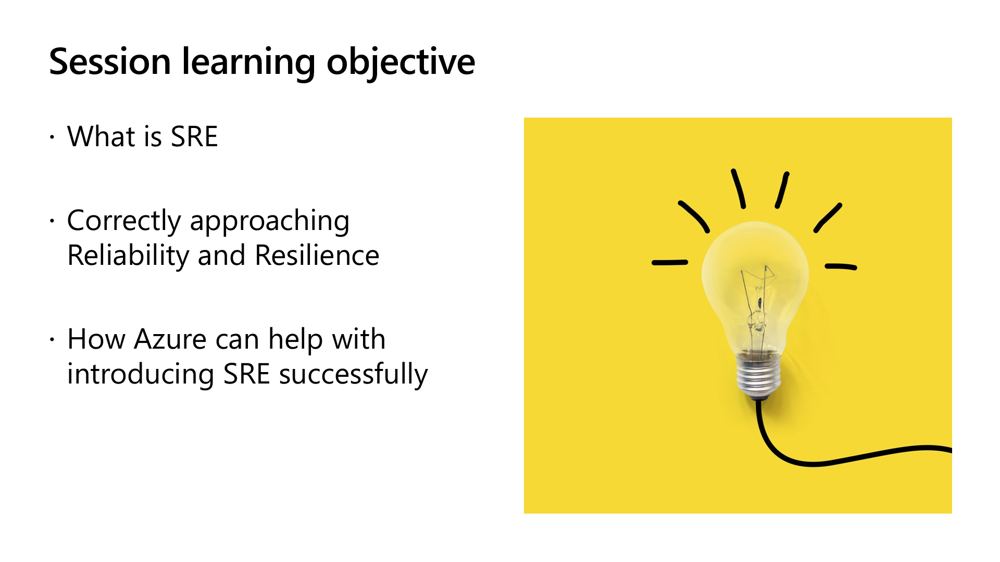
Introduction to Site Reliability Engineering
Site Reliability Engineering (SRE) is a discipline that originated at Google to blend software engineering with IT operations. It focuses on creating scalable and highly reliable software systems. At its core, SRE aims to strike a balance between the need to innovate rapidly and the need to maintain system reliability.
The 3 words in the definition can be explained as follows:
-
Reliability: Means Guaranteeing that any running application is available according the business requirements
-
Engineering: Refers at Applying the principles of computer science and engineering to build and maintain systems and applications, from development to monitoring
-
Site: This initially referred to THE SITE, yes, http://www.google.com, to guarantee it would be available globally, all the time, no matter what. (An interesting side-story I picked up from talking to one of the Google SRE founders, is that they actually found out that the site was becoming even more important than Google initially planned for - whenever anyone was connecting to a public wifi in a hotel, train station, coffee shop or similar, one of the first, if not the first site they would try to connect to was… yes, Google)
As an SRE team, you guarantee workload reliability; this could range from designing, to operating and any process in between, to make systems more scalable, reliable and efficient
In meantime, the site could be broadened to Services, as SRE’s are typically managing large-scaled datacenters on global scale
Drilling down on the role of an SRE would take me like a day or 2, but easy said, it can be 3 different core responsibilities:
- Wearing the developer hat, writing software for large scale workloads
- Sometimes, you take responsibility for the side-pieces like backup, monitoring, load-balancing and alike, being the operations engineer if you want
- And sometimes, it’s figuring out how t apply existing solutions to new problems
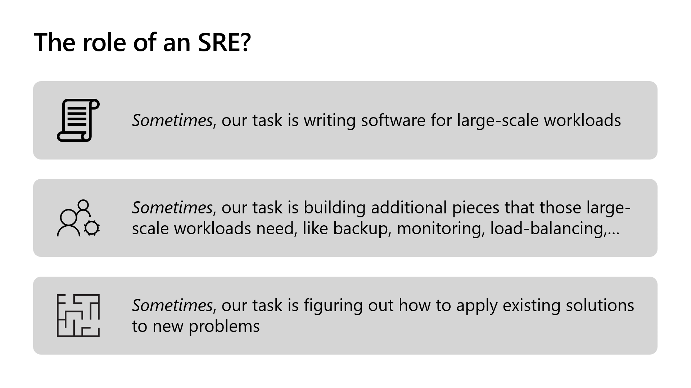
Key principles of SRE include:
-
Service Level Objectives (SLOs): Defining and measuring the desired level of reliability for a service using SLOs. SLOs are a critical aspect of SRE, as they provide a clear target for system performance.
-
Error Budgets: SRE teams work within an error budget, which is the allowed downtime or errors a service can experience without violating its SLO. This concept encourages a focus on both reliability and innovation.
-
Automation: Automation is essential to SRE. By automating operational tasks and using Infrastructure as Code (IaC) principles, SREs reduce the risk of human error and increase efficiency.
-
Incident Response: SREs prioritize incident response and post-incident reviews to learn from failures and continually improve system reliability.
Which leads me to the next question, is SRE like DevOps 2.0?
In short, DevOps is mainly focused on integrating a culture of brining developer and operations teams together, to collaborate closer with each other, to deliver value to the business
SRE relies on DevOps prpctices to optimize reliability – I’ll walk you through some demos on that later in this session with Azure DevOps; I always say there wouldn’t be SRE without DevOps; but SRE is not replacing DevOps, but is rather augmenting it.
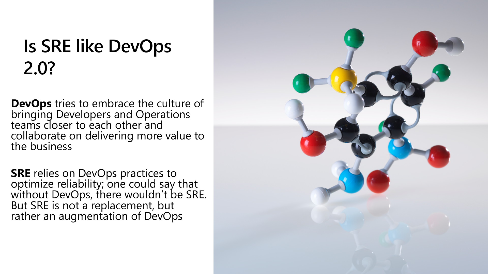
How to measure SRE success?
So now you know what SRE is, the next big question from your customers is probably, how can we measure its success?
While not 100% complete because of time constraints, it boils down to 8 different terms that are crucial to know about:
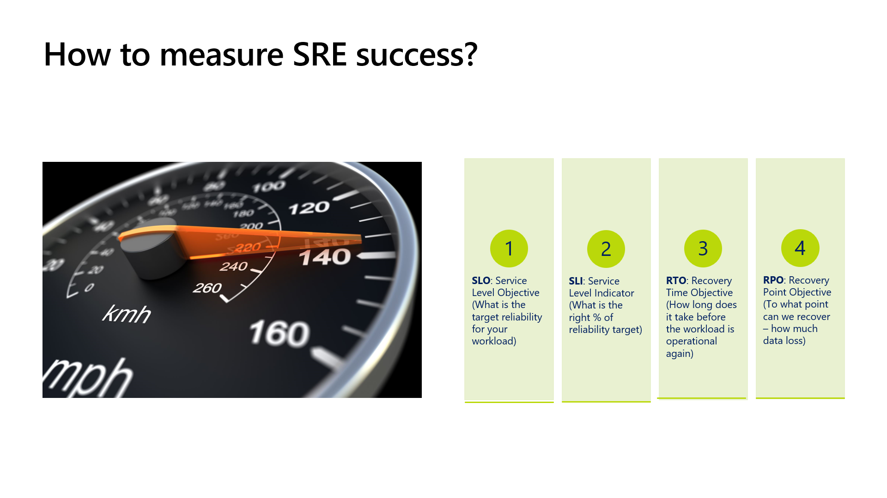
- SLO – service level objective, which refers to the target reliability for a given workload
- SLI – works together with SLO; this identifies what is the right percentage of the reliability target
- RTO – Recovery Time Objective – refers to the amount of time it takes to fix an issue and got a workload up-and-running again
- RPO – Recovery Point Objective, which defines the point to where you could recover, meaning what is the foreseeable data loss
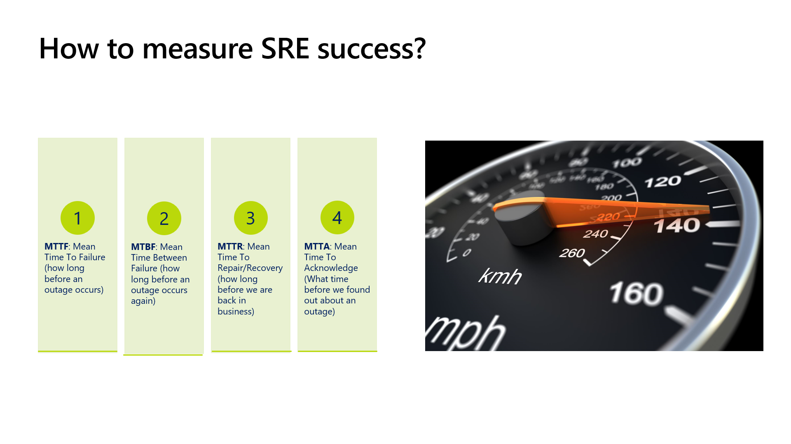
Specifically for measuring downtime and outages, the following 4 are important:
- MTTF – Mean Time To failure – how long does it take before something breaks
- MTBF – Mean Time Between failure – how long before the next outage occurs
- MTTR – Mean Time To Repair – how long to fix it
- MTTA – Mean Time To Acknowledge – how long to detect an outage
Azure Well Architected Framework
If you would look down from Mars onto an Azure datacenter, it would look like this, having 3 core layers:
Azure Foundation, this is what I call the fabric, typically the layer that the customers can’t really touch, although it gives some configuration options
Azure Cloud Services, is where the customer deploys workload infrastructure; this could be IAAS, PAAS, Containers and Serverless microservices
On top, I position Apps, like the actual workloads that are running
Important to emphasize is that using Azure is a shared responsibility; out of Microsoft, we need to provide a reliable Azure Foundation, think of the physical datacenters, allowing customers to build their level of reliability and resilience on the Cloud Services layer – think of Availability Sets and Zones for VMs, Global Load Balancers to redirect web traffic across Azure Regions or multi-region storage and database replication; which results in reliable App Runtimes
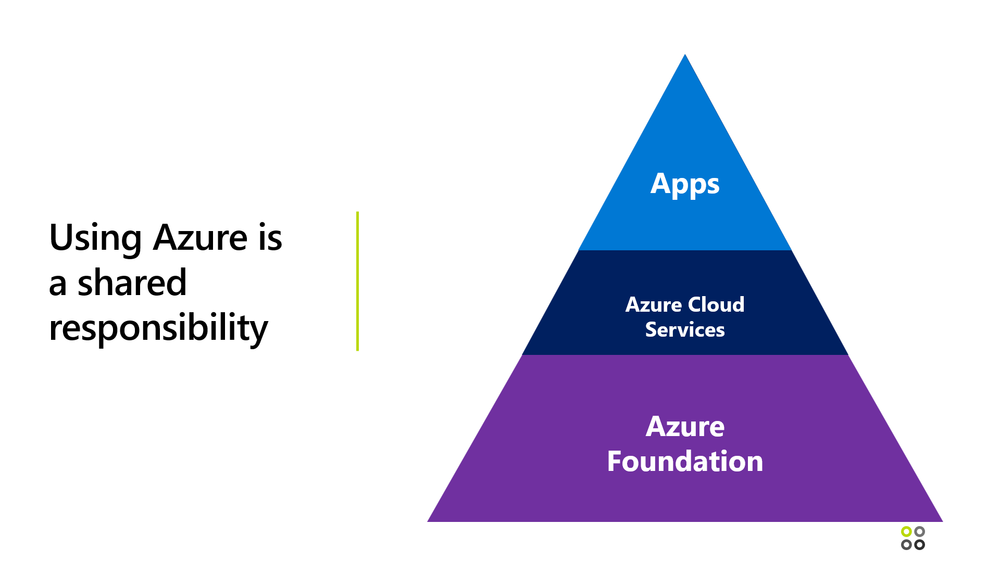
So how do you get a view on Azure Foundation reliability?
Right, checking Azure Service Health; this is actually a combination of 3 different tools in one:
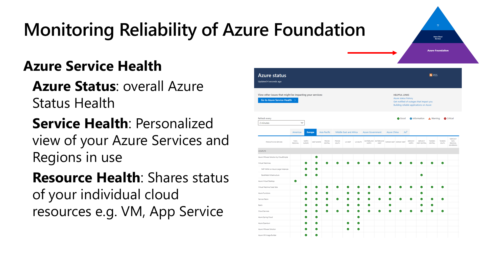
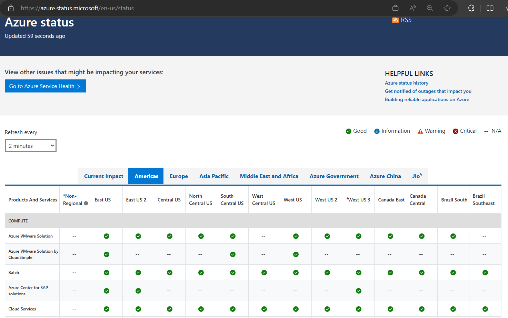
Azure Status: overall Azure Status Health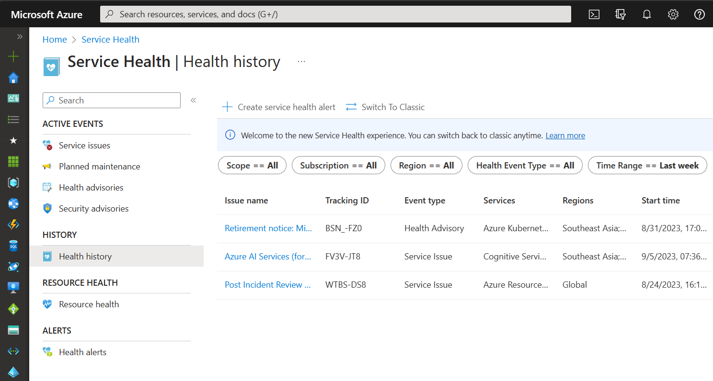
Service Health: Personalized view of your Azure Services and Regions in use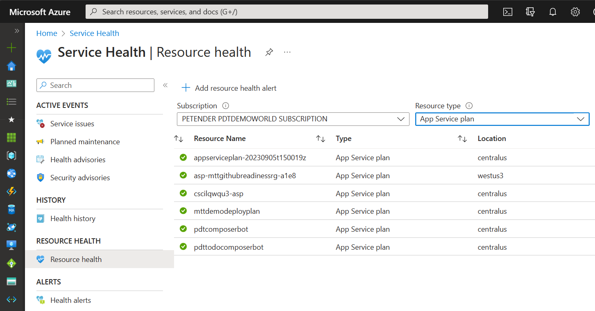
Resource Health: Shares status of your individual cloud resources e.g. VM, App ServiceThe Azure Well Architected Framework is a comprehensive guide provided by Microsoft to help architects build secure, high-performing, resilient, and efficient infrastructure for their applications. It aligns closely with SRE principles, as it emphasizes best practices for reliability and scalability.
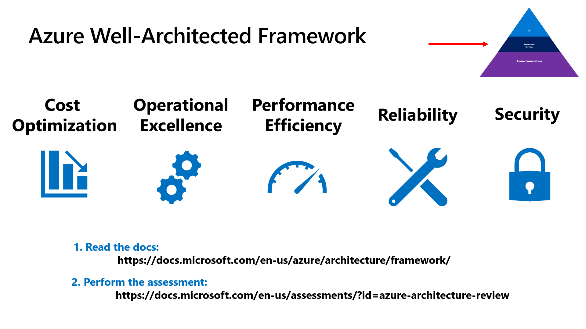
Here are some key elements of the Azure Well Architected Framework that contribute to SRE:
-
Reliability Pillar: This pillar of the framework specifically addresses the principles of SRE. It covers topics like fault tolerance, disaster recovery, and monitoring. Architects can use this guidance to design systems that meet their reliability SLOs.
-
Operational Excellence Pillar: SREs focus on automation and efficient operations. Azure’s Operational Excellence Pillar provides guidance on automating tasks, reducing manual intervention, and improving operational efficiency.
-
Performance Efficiency Pillar: Meeting SLOs often requires optimizing performance. This pillar offers insights into selecting the right Azure resources and configurations to achieve optimal performance for your workloads.
-
Cost Optimization Pillar: Managing costs is essential in SRE. Azure provides tools and best practices for cost management and optimization, helping teams stay within their error budgets.
Apart from these, I summarize a few other best practices if you want:
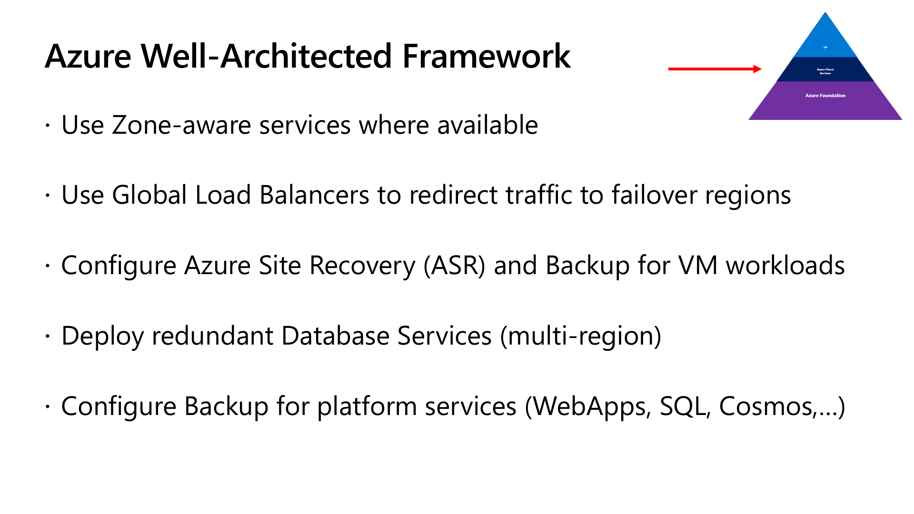
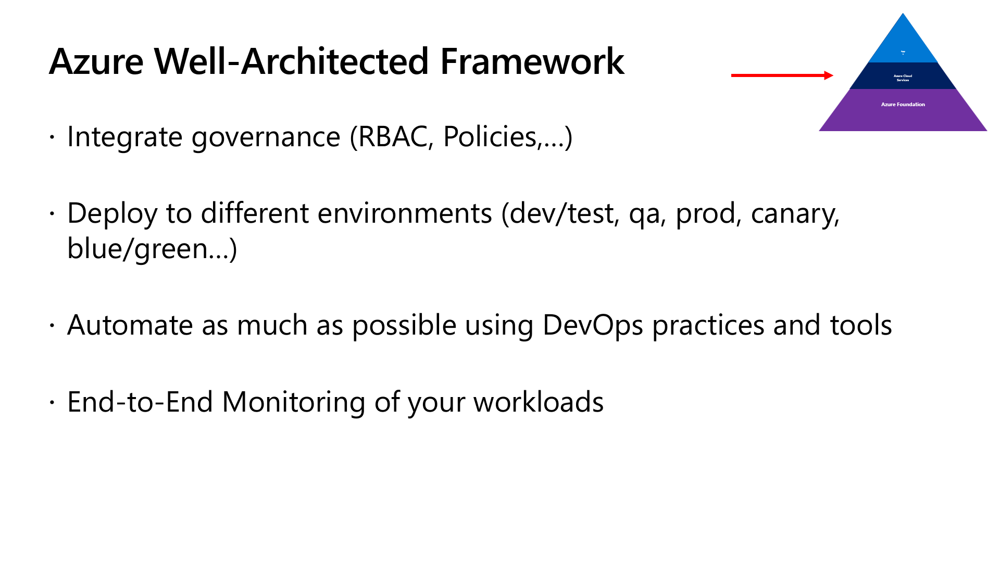
Azure Service Level Agreements
Service Level Agreements (SLAs) are a crucial aspect of SRE, as they define the expected reliability and availability of Azure services. Understanding Azure SLAs is essential for architects and SREs to design and operate reliable systems.
Key points about Azure SLAs:
-
Availability Guarantees: Azure SLAs typically guarantee high availability for services, such as Virtual Machines (VMs), Azure SQL Database, and Azure App Service. These SLAs specify the percentage of time a service is expected to be available.
-
Service Credits: Azure offers service credits if SLAs are not met. This financial compensation is part of Azure’s commitment to providing reliable services.
-
Multi-Region Deployments: To enhance reliability, architects can design their applications to span multiple Azure regions. This ensures redundancy and reduces the risk of downtime.
-
Monitoring and Alerting: Implementing effective monitoring and alerting systems is crucial to detect and respond to SLA violations promptly.
Best Practices around DevOps in Regards to Azure Reliability
DevOps practices play a pivotal role in achieving SRE goals. Integrating DevOps and SRE principles can lead to a culture of continuous improvement and reliability. Here are some best practices:
-
Infrastructure as Code (IaC): Embrace IaC to automate the provisioning and configuration of Azure resources. Tools like Azure Resource Manager (ARM) templates and Terraform facilitate the management of infrastructure as code.
-
Continuous Integration and Continuous Deployment (CI/CD): Implement CI/CD pipelines to automate software deployments. Azure DevOps Services, GitHub Actions, and Jenkins are popular tools for building robust CI/CD pipelines on Azure.
-
Monitoring and Observability: Utilize Azure Monitor, Application Insights, and Log Analytics to gain real-time visibility into your applications and infrastructure. This enables proactive issue detection and resolution.
-
Automated Testing: Implement automated testing practices, including unit tests, integration tests, and end-to-end tests. Azure DevTest Labs can help create test environments easily.
-
Containerization and Orchestration: Container technologies like Docker and Kubernetes can enhance application reliability and scalability. Azure Kubernetes Service (AKS) simplifies the management of Kubernetes clusters.
-
Incident Management: Define clear incident response procedures and automate incident detection and resolution where possible. Azure Service Health and Azure Logic Apps can be valuable here.
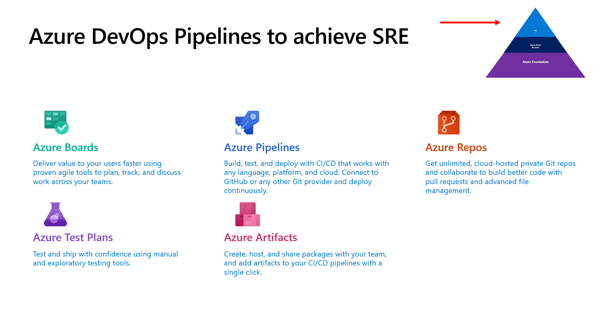
Chaos Engineering and Azure Chaos Studio
Chaos Engineering is a practice that involves deliberately injecting failures and faults into a system to test its resilience. Azure offers a powerful toolset, including Azure Chaos Studio, to help organizations practice Chaos Engineering and improve the reliability of their Azure-based applications.
Key components of Azure Chaos Studio:
-
Experimentation: Azure Chaos Studio allows you to create controlled experiments that simulate various failure scenarios, such as network disruptions, high CPU usage, or database outages.
-
Observability: Gain insights into how your system behaves under stress by collecting and analyzing telemetry data during chaos experiments. This data helps identify weaknesses and areas for improvement.
-
Automation: Automate the execution of chaos experiments to ensure consistency and repeatability. This is especially valuable for ongoing testing and validation of your system’s reliability.
-
Integration with Azure Services: Azure Chaos Studio integrates seamlessly with Azure services, making it easy to test the resilience of Azure-based applications and services.
(For more details on Chaos Engineering and Azure Chaos Studio, read my recent blog post on the subject)
Conclusion
Achieving Site Reliability Engineering with Azure involves a combination of best practices, tools, and a strong focus on reliability. By following the Azure Well Architected Framework, understanding Azure SLAs, implementing DevOps best practices, and experimenting with Chaos Engineering using Azure Chaos Studio, organizations can build highly reliable and resilient systems on Microsoft’s cloud platform.
As Azure continues to evolve, it offers an ever-expanding set of tools and services that align with SRE principles. By staying informed about the latest Azure offerings and incorporating them into your SRE practices, you can ensure that your applications and services meet their reliability objectives in the dynamic world of cloud computing.
Thanks to the amazing Azure Back To School Team for having me for another year, and continuously supporting the Azure communities.

Cheers!!
/Peter